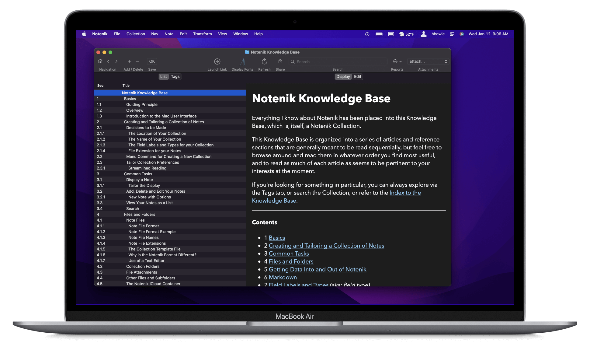

Intro to Website Creation using Notenik

I’m Herb Bowie, a web author and developer of the Mac app Notenik.
Notenik can be used to help an individual create their own website, but many people are put off by the idea of getting anywhere close to HTML, believing it to be too difficult a topic for ordinary people working outside of the tech industry.
Blake Watson’s web book HTML for People goes a long way towards solving this problem, providing a gentle and fun introduction to the whole process of building a website using HyperText Markup Language.
Blake’s site made me wonder if I could leverage his work by providing a companion document that would allow readers to quickly see, at every step of the way, how comparable tasks can be accomplished using Notenik.
And so this document is the result. If you’re wondering how Notenik can be used by anyone to create their own website, then I suggest you work your way through the pages that follow, referencing relevant chapters of Blake’s book as you go.
I’ll be looking forward to hearing feedback about how this might work for people.
Thanks for reading!
Contents
- Introduction
- 1. Zero to internet: your first website
- 2. Add content to your website
- 3. Intermission: upgrade your text editor
- 4. A website with style
- 5. Adding an about page
- 6. Adding a blog
- 7. Adding a résumé (or CV)
- 8. Intermission: installing a local web server
- 9. Adding a fun page
- 10. Achievement unlocked: Hypertexter
- 11. CSS Bonus
- 12. Reusable HTML
- 13. Next Steps
- 14. Resources and links
- 15. Navigation
Next: Introduction